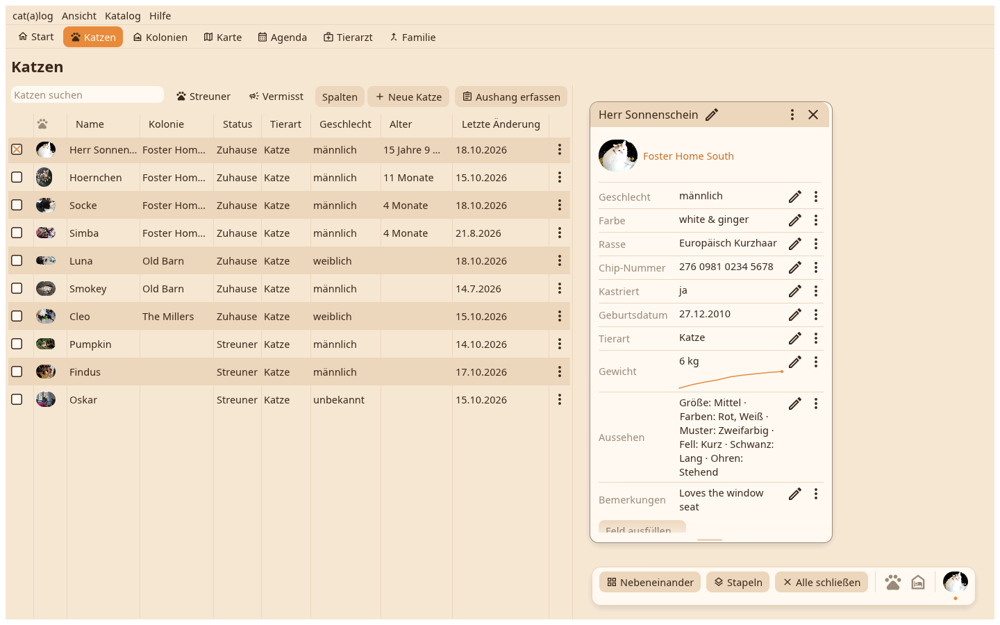
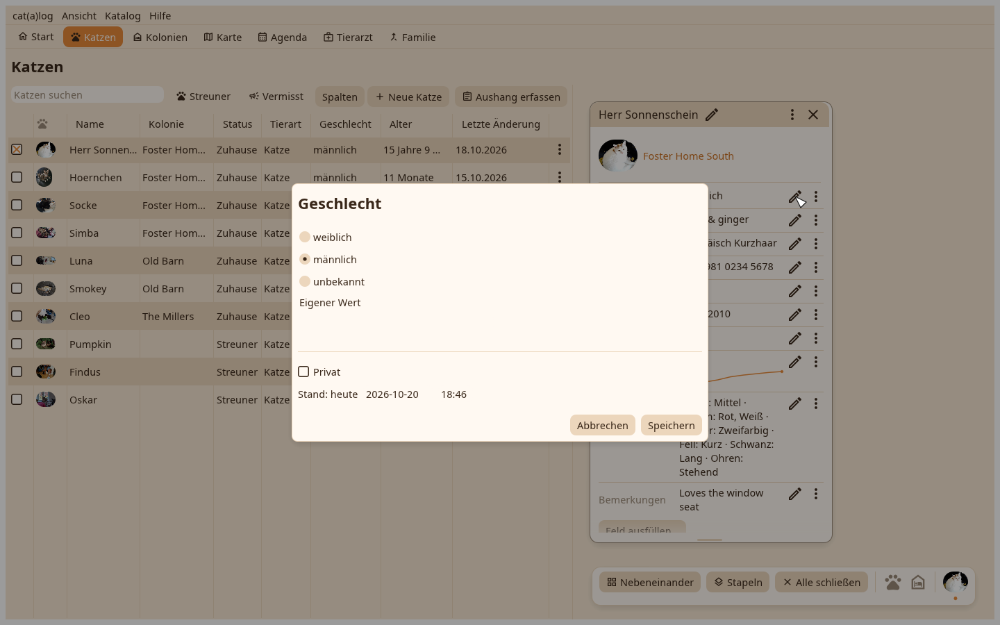

1. Die Karte
Die Karte einer Katze mit ihren Feldern. Jede Zeile hat einen Stift und ein ⋮.

2. Der Editor
Der Stift öffnet den Editor des Feldes als Dialog: der Wert in deinen Einheiten, das Datum, ab dem er zählt, die Privat-Markierung, Speichern rechts. Die Karte zeigt den neuen Wert, und der Verlauf behält den alten.
